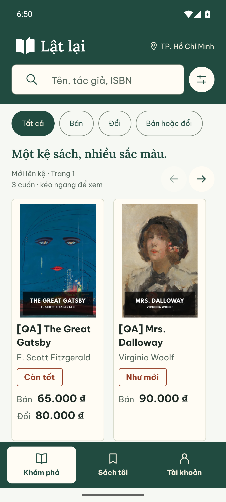
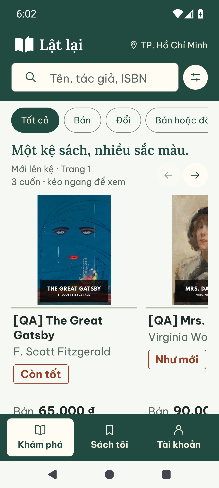
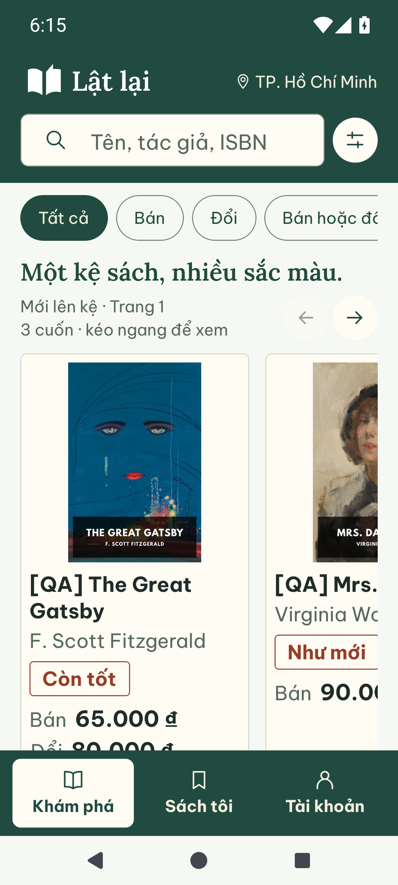
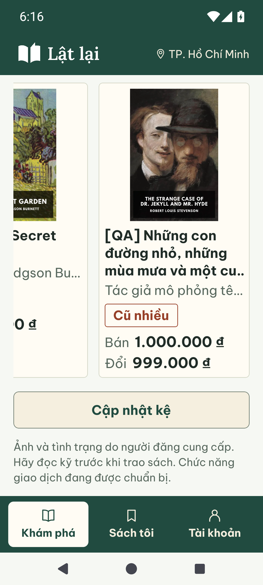

Thẻ sách gọn và rõ
Nền trắng ấm, viền nhẹ 1dp, bo6dp; bỏ nét đỡ bìa. Bìa, tên, tác giả, dấu và giá đi liền nhau. Giá cách dấu8dp; thẻ cùng hàng đều chiều cao, phần dư nằm sau toàn bộ thông tin.
Android Pixel7/API35 khoảng390dp. Cùng năm nội dung QA, ảnh tư liệu; API/Mongo riêng, storageFAKE. Trước087bf4c; sau checkpoint fix(rn): group shelf listings on subtle card surfaces. Chưa push/merge.
100% — điều hướng cử chỉ
Trước · giá căn đáySau · thông tin liền mạch trong thẻ
130% — ba nút Android
Trước
Sau
Giá giữa các cuốn được phép lệch cao độ. Cuốn ít nội dung có khoảng trống ở cuối thẻ. Đây là đánh đổi đã duyệt để thông tin từng cuốn liền nhau mà khung thẻ vẫn đều.
Tên dài và hai giá ở130%

Kiểm tra · 02/10/2026
RN96/96tests, lint/typecheck, webexport12routesPASS; warningNO_COLOR/forced exit0 của Expo. Android100/130%: xem đầu/cuối kệ, nút qua cuốn, mở chi tiết/Back giữ vị trí. Web390px đo cả5cuốn: tác giả→dấu8px, dấu→giá8px; ba thẻ hàng1 cao417px, hai thẻ hàng2 cao438px. Không đổi query/API/session/navigation, không thêm dependency.
QA tái dùng run ui-stamp-flow trên Mongo37017/random*_test; không ghi vào DB chính. TalkBack/ARM/iOS/human/release vẫn mở. Lỗi tương phản nútOSdark/API35 từ gói navbar chưa đóng. Các gate không liên quan không chạy lại. Vòng trước.